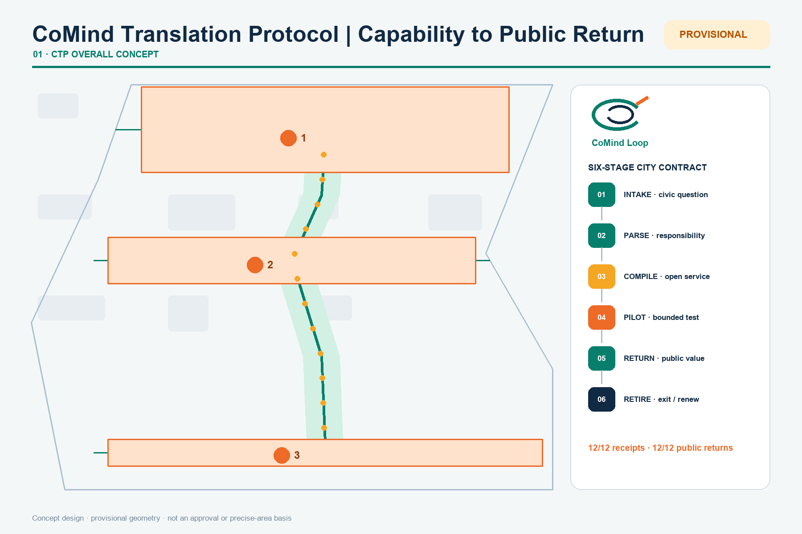
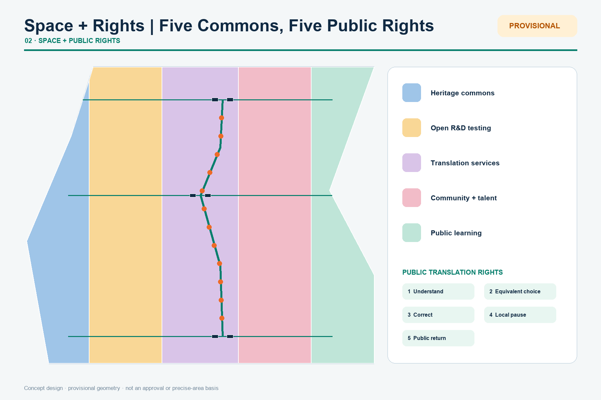
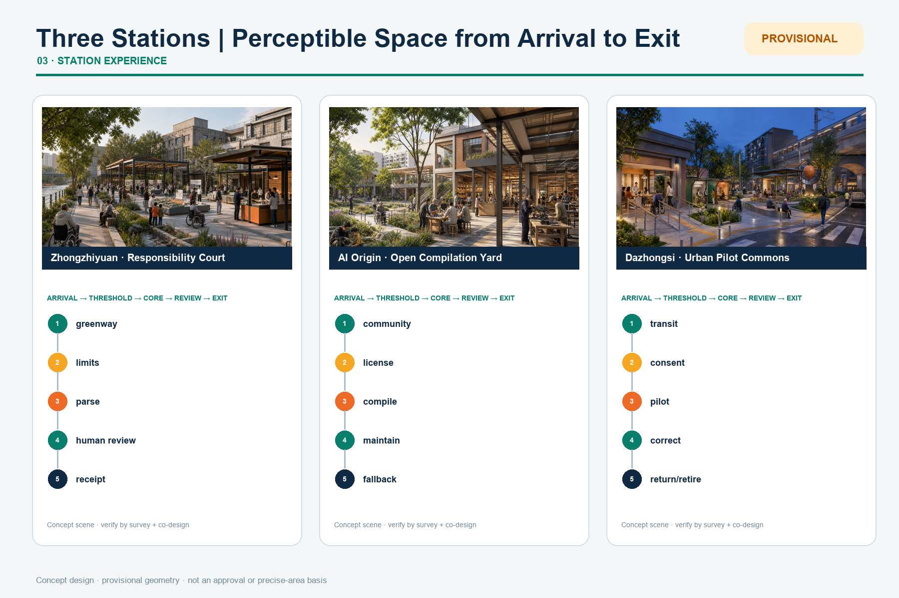
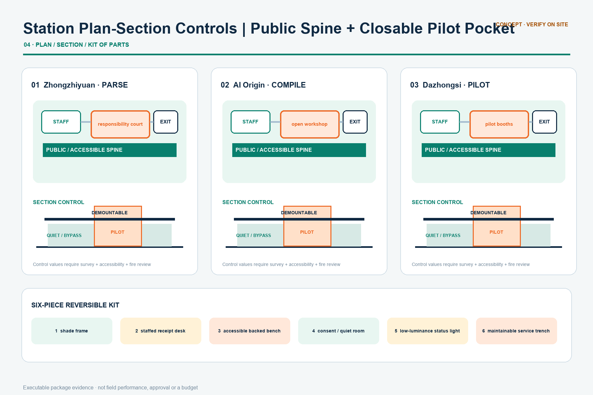
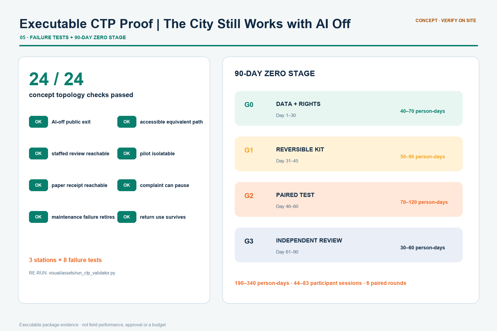

Overview Map

Three-Level Scope
43.6 km² research context → 11.4 km² overall design → 368.4 ha key-area brief; submitted polygons remain provisional.
Key Areas
Zhongzhiyuan parses responsibility · AI Origin compiles open services · Dazhongsi pilots and returns them. Each carries a public receipt and local pause.
Land Use

Key Areas

Slow Mobility
12 translation tasks cross INTAKE, PARSE, COMPILE, PILOT, RETURN and RETIRE. Every node declares a receipt, public return, pause trigger and fallback.
Blue-Green Public Space
43.6 km² research context → 11.4 km² overall design → 368.4 ha key-area brief; submitted polygons remain provisional.

Buildings
Six concept footprints test service combinations. FAR, height, density and final retain/renovate/demolish decisions await official surveys and controls.
Renewal Projects
Eight concept projects each identify a suggested owner, professional prerequisites, public KPI and exit condition.
AI Scenarios
12 translation tasks cross INTAKE, PARSE, COMPILE, PILOT, RETURN and RETIRE. Every node declares a receipt, public return, pause trigger and fallback.
Core Metrics

Task Coverage
Announcement sections 1.3–1.5 and Agent tasks 1–6 map to narrative, geometry, metrics, drawings and review matrices.
Self-Check
24/24 topology tests, 12/12 receipts, 12/12 public returns, 3/3 local-review interfaces, 8/8 project gates and eight twelve-field handover contracts are reviewable.
Sources
Official announcement, cleared taskbook, Beijing and Haidian industrial-policy context, repository registry and six linked international cases.
Assumptions
Official polygons, controls, ownership, utilities, heritage and engineering evidence remain prerequisites for statutory or delivery decisions.
Executable CTP Validator
Select a station and switch AI off. The test checks public exit, accessible equivalent path, staffed review, paper receipt, pause, retirement and surviving public use. Results validate package topology only, not field performance.